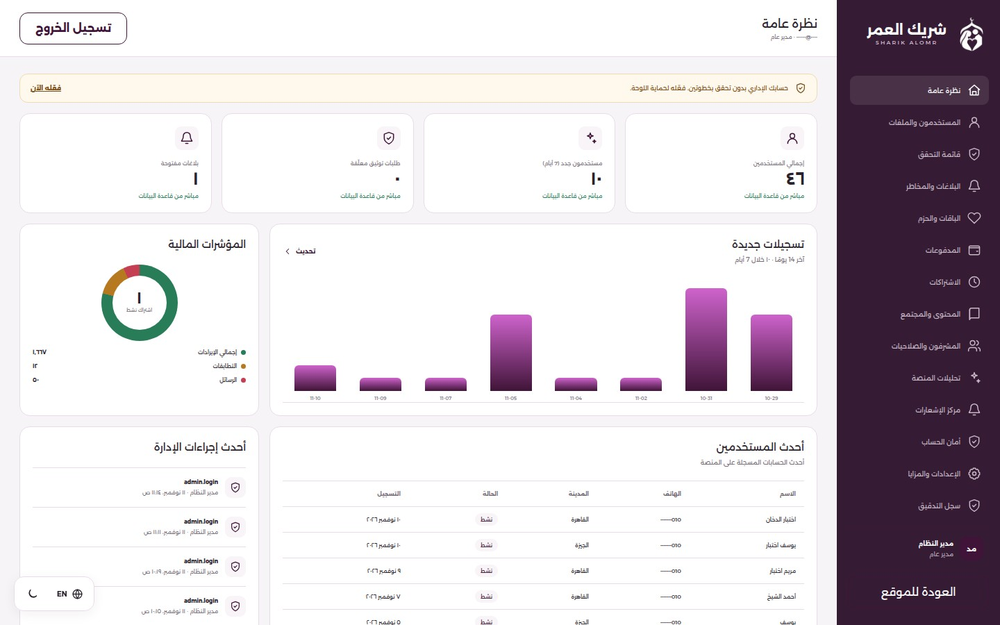
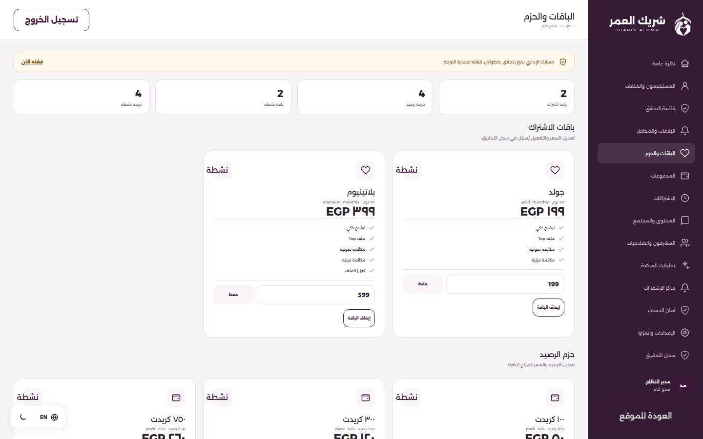
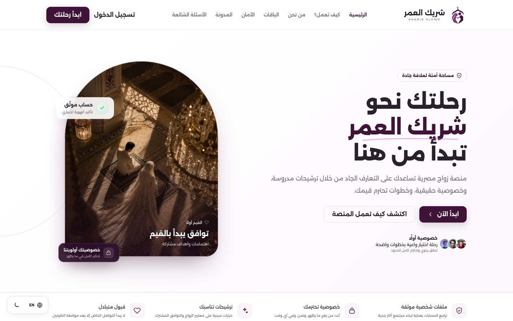

تقرير صريح عن لوحة تحكم إدارة «شريك العمر»: الأجزاء الجاهزة للاستخدام اليومي، والحدود الحالية، وخطة الوصول إلى تحكم كامل في محتوى الموقع.
لوحة الإدارة تدير تشغيل المنصة والمحتوى المتغيّر بكفاءة، لكنها لا تتحكم حاليًا في كل نص وصورة داخل الموقع. جزء من المحتوى التعريفي ما زال مكتوبًا داخل كود الواجهة، وتغييره يحتاج مبرمجًا ونشرًا جديدًا.
١٤ قسمًا في اللوحة: المستخدمون، التوثيق، البلاغات، المدفوعات، الاشتراكات، الإشعارات، المشرفون والصلاحيات، التحليلات، وسجل التدقيق.
أسعار باقات الاشتراك، وحزم الكريدت، والمقالات تُحفظ في قاعدة البيانات، ويقرأها الموقع من الـ API ويظهر التعديل بدون نشر كود جديد.
المحررات تعدّل الحقول الأساسية فقط. لا يوجد رفع صور، ولا تحرير لأقسام الصفحة الرئيسية، ولا معاينة/نشر للمحتوى الثابت.
نصوص وصور الهيرو، الفوتر والقوائم، الصفحات القانونية، وSEO — كلها ثابتة في الكود، وليست ضمن حقول اللوحة.
المستخدمون، التوثيق، البلاغات، المدفوعات، الاشتراكات، الإشعارات، الصلاحيات، وسجل التدقيق. هذه هي القوة الحالية للوحة، وهي مكتملة.
نصوص الصفحات، الصور، أقسام الصفحة الرئيسية، الفوتر، الصفحات القانونية، وSEO. هذه هي الطبقة التي ما زالت ناقصة وتحتاج استكمالًا.
كل العمليات اليومية ليست شاشات عرض فقط — التنفيذ متصل بقاعدة البيانات، وكل إجراء إداري يُسجَّل في سجل التدقيق.
بحث بالاسم أو الهاتف أو البريد، وتغيير حالة الحساب، وإيقاف/حظر.
مراجعة طلبات التوثيق واعتمادها أو رفضها مع تسجيل القرار.
حل البلاغ أو تجاهله، وتنفيذ إجراء الإشراف المناسب.
عرض المدفوعات والفواتير، وتأكيد استلام الدفعة يدويًا.
متابعة الاشتراكات وحالتها وتواريخ التجديد والانتهاء.
إضافة مشرفين وأدوار، وصلاحيات دقيقة لكل قسم، وتحقق بخطوتين.
إرسال إشعار جماعي لكل المستخدمين أو شريحة (نشط/موثّق)، عبر التطبيق أو البريد.
مؤشرات مباشرة من قاعدة البيانات: المستخدمون، الاشتراكات، البلاغات.

الباقات وحزم الكريدت والمقالات مخزّنة في جداول، والموقع يقرأها من الـ API — لذلك التعديل يظهر للزوار بدون نشر كود جديد.

غير متاح هنا: مزايا الباقة وحدودها (PlanFeature) — تحتاج توسيع المحرر.
الأجزاء دي ليست ناقصة بالخطأ — هي محتوى ثابت مكتوب داخل كود الواجهة، أو شاشات لا تربط قيمها بالموقع العام. تعديلها يحتاج مبرمجًا ونشرًا جديدًا.
| الجزء | الوضع الحالي | يحتاج مبرمج؟ |
|---|---|---|
| نصوص الصفحة الرئيسية الهيرو، «كيف تعمل»، «من نحن»، الأمان، FAQ |
مكتوبة داخل HomePage.tsx — لا توجد حقول لها في اللوحة. | نعم |
| صور الموقع | صورة الهيرو ثابتة في public/images — لا يوجد رفع أو استبدال. | نعم |
| الفوتر والقوائم واللينكات | مكتوبة داخل كود الواجهة، وليست محتوى قابلًا للتحرير. | نعم |
| الصفحات القانونية الخصوصية، الشروط، الاستخدام |
مكتوبة داخل legal.ts — لا توجد شاشة لتحريرها. | نعم |
| SEO وOpen Graph | عناوين ووصف ومشاركة ثابتة في إعدادات الواجهة. | نعم |
| رفع الصور / مكتبة وسائط | غير موجودة — غلاف المقال رابط URL فقط، والصور الثابتة داخل الكود. | نعم |
| مزايا وحدود الباقات | مخزّنة في PlanFeature لكنها غير ظاهرة في محرر الباقات. | نعم |
| ربط إعدادات المنصة بالموقع | شاشة الإعدادات تحفظ القيم، لكن الموقع العام لا يقرأ منها نصوصًا أو صورًا. | نعم |

التشغيل والمحتوى المتغيّر من اللوحة، والهوية والنصوص التعريفية من الكود. الجدول ده يوضح عمليًا أين تتم كل خطوة.
| التغيير المطلوب | من اللوحة | يحتاج مبرمج |
|---|---|---|
| تغيير سعر باقة اشتراك أو اسمها أو وصفها | متاح | لا |
| تغيير سعر حزمة كريدت أو رصيدها | متاح | لا |
| إضافة مقال جديد أو تعديل مقال منشور | متاح | لا |
| نشر مقال أو إخفاؤه (مسودة / منشور) | متاح | لا |
| إيقاف مستخدم أو حظر حساب | متاح | لا |
| اعتماد طلب توثيق أو رفضه | متاح | لا |
| تأكيد استلام دفعة أو إرسال إشعار جماعي | متاح | لا |
| تغيير صورة غلاف مقال | رابط فقط | لرفع صورة |
| تعديل نص الهيرو أو أي قسم في الصفحة الرئيسية | غير متاح | نعم |
| تغيير صورة الهيرو أو إضافة صورة جديدة للموقع | غير متاح | نعم |
| إضافة سؤال FAQ أو تعديل الفوتر والقوائم | غير متاح | نعم |
| تعديل صفحة الخصوصية أو الشروط أو مزايا الباقات | غير متاح | نعم |
الأسعار · المقالات · المستخدمون · التوثيق · البلاغات · المدفوعات · الاشتراكات · الإشعارات · الصلاحيات.
نصوص وصور الصفحة الرئيسية · الفوتر والقوائم · الصفحات القانونية · SEO · مزايا الباقات · مكتبة الوسائط.
اللوحة الحالية أساس جاهز. استكمال CMS لا يحتاج إعادة بناء — يحتاج خمس خطوات مترابطة، كل خطوة تضيف جزءًا فعليًا من التحكم في المحتوى.
اللي اتعمل يغطي تشغيل المنصة والمحتوى المتغيّر بشكل كامل. والخطوة الجاية واضحة ومحددة: تحويل النصوص والصور الثابتة إلى محتوى قابل للتحرير من اللوحة.